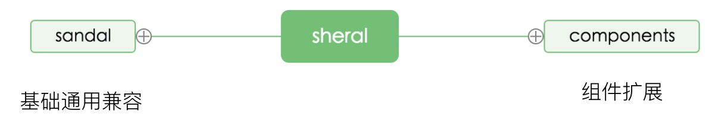

sheral 是基于 sandal（基础sass库）扩展的移动端UI库。
sandal[ˈsændl]: 檀香。 sheral 啥意思？暂时不明，不过这不妨碍介绍这两者。
sheral整体设计思想主要分为基础功能部分和UI组件部分，其中基础功能部分由 sandal 来承载，而 UI 组件就是基于 sandal 提供的基础能力实现的 UI（一如jquery和插件的关系，sandal就如jquery，而一个个组件就如一个个扩展的jquery插件）
好吧，介绍性的内容我们还是看 官方 的吧，源码在 github 上也能随时看到。好了，我们的重点是解析功能。
这个 demo 网站有点 “精神分裂”，该脚手架其实是适合多页面简单网站的快速开发，介绍的确是一个侧重于移动端的 ui 库，从好了想，算是一举两得吧，即介绍了 ui 库，也给大家展示了这个脚手架的一些功能。